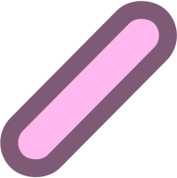
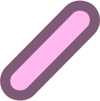

You can present as you want to. Feminine, masculine, androgeous. Whatever you feel represents you the most in that moment. And that idenity is fluid, and can change as you grow and change throughout your life.
You chose what you want to identify as, how you present yourself to other people, what pronouns you want.